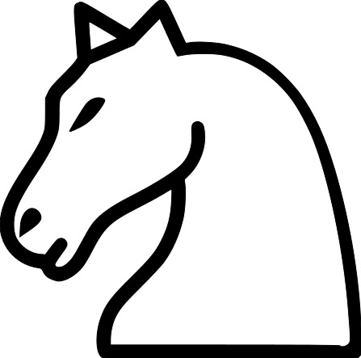
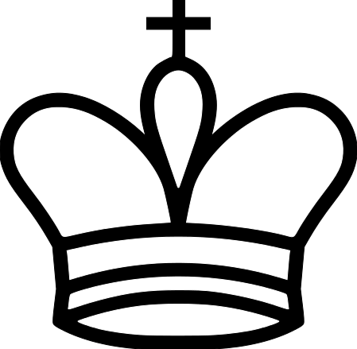
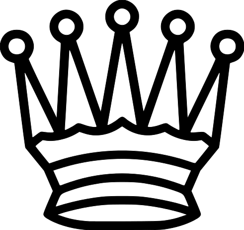
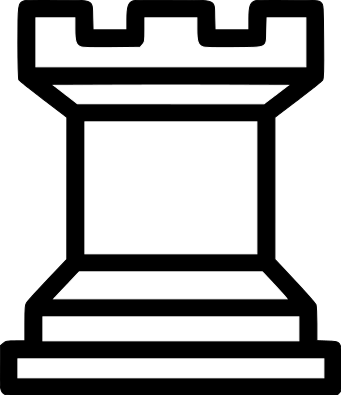

Declarative Programming - Lab 2
Based on the Informatics 1 — Functional Programming @ University of Edinburgh
2>Exercise
Chess
We'll use again the chess exercise from last week.
First, open the file showPic.html in your web-browser. Load the file lab2chess.hs
into GHCi and remember that you can draw pictures using render. For example:
Main> render knight
The webpage (which refreshes every second) should now show a picture of a white knight chess piece:

Recall that the PicturesSVG module includes all chess pieces and white and grey squares to create a chessboard, and some functions to manipulate the images. The following table shows the basic pictures:
| Chess pieces |
Board squares |
| bishop |
A bishop |
|
blackSquare |
A black (grey) square* |
|
| king |
A king |
 |
whiteSquare |
A white square |
|
| knight |
A knight |
|
| pawn |
A pawn |
|
* The black square is grey so that you can see
the
black pieces on it. |
| queen |
A queen |
 |
| rook |
A rook |
 |
All the basic pictures above have the type Picture.
Below are the functions for arranging pictures:
| flipV |
reflection in the vertical axis |
| flipH |
reflection in the horizontal axis |
| invert |
change black to white and vice versa |
| over |
place one picture onto another |
| beside |
place one picture next to another |
| above |
place one picture above another |
| repeatH |
place several copies of a picture side by side |
| repeatV |
stack several copies of a picture vertically |
Note that you can also use:
- the Empty element to the Picture type, as neutral element for
beside , above and over ,
- the clear element, which is a square picture that contains only an invisible background.
Test Empty and clear using render.
In the next exercises we shall use the
FEN notation.
- Write a function isFENChar which checks whether a given Char can be part of an FEN encoding, that is:
- It is one of the letters representing pieces ('r','n','b','q','k','p') regardless of capitalization (Hint: use elem and toLower)
Prelude> elem 2 [1,2 3]
- It is a digit encoding clear spaces (Hint: use toDigit)
- It is the character '/' separating rows
- Write a function besideList that takes a list of pictures and returns the picture obtained by placing
the pictures from the list one beside another.
- Read the documentation for the function replicate
-
Use the two functions above to write a function toClear that takes an integer n, n>=0, and returns a picture representing
n clear squares, one beside another.
-
Write a function fenCharToPicture that, when applied to a character, returns the picture corresponding to it, such that:
- for any letter, it returns the corresponding picture,
- if the character is a digit 'n', it returns to_clear n, (to convert a character digit to the corresponding integer digit
use the function digitToInt),
- returns Empty for any letter that it is not used in FEN.
Hint: use the case expression, or function definitions by cases.
- Write a function isFENRow that checks if a given string represents a row of a chess board in the FEN notation.
You can use the isFENChar function defined above.
- Recall the constructor for lists is : and learn the functions ++, head and tail.
Prelude> x:l = [1,2,3]
Prelude> head [1,2,3]
Prelude> tail [1,2,3]
Prelude> head "abc"
Prelude> tail "abc"
Prelude> [1,2]++[3,4]
- Write a function fenCharsToPictures that takes a list of FEN characters and returns the list of corresponding
pictures. See the type in the lab2chess.hs file.
- Write a function fenRowToPicture that translates a row in the FEN encoding in the corresponding picture. Hint: use besideList.
- Learn about the splitOn function from the module
Data.List.Split. Read the examples, try it in GHCi. Pay attention that you have to import the module Data.List.Split
Suplimentary exercise: Define mysplitOn, your own splitOn function.
- Write a function fenRowsToPictures whose argument is a list of FEN strings representing rows like
["rnbqkbnr", "pppppppp", "8", "8", "8", "8", "PPPPPPPP", "RNBQKBNR"]
and whose result is a list pictures, each corresponding to a row description in the input list
- Write the function aboveList that takes a list of pictures and returnes the picture obtained by placing
the pictures from the list one above another.
- Write a function fenToPicture, which combines the above two functions to compute the picture associated to the FEN encoding.
- You can finally define the chess board! Write a function chessBoard whose argument is a FEN string and
whose result is the picture corresponding to the FEN over an empty board.
- Extra credit exercise.
Assume that the chess board is empty. Write a function allowedMoves that takes a chess piece and a position and returns
the list of all possible moves the given piece can make from the given position. The chess piece will be represented by a
a Char similarly to the FEN encoding, e.g. 'n' for "knight" etc. A position is a square on the chess board and will be represented by
a tuple (c,n) , where c ∈ {'a',...,'h'} and n ∈ {1,..,8}.
Note that the type Char belongs to the Ord typeclass, so one can use functions like
succ, pred , min, max .
Prelude> succ 'C'
Prelude> pred 'C'
Prelude> min 'A' 'B'